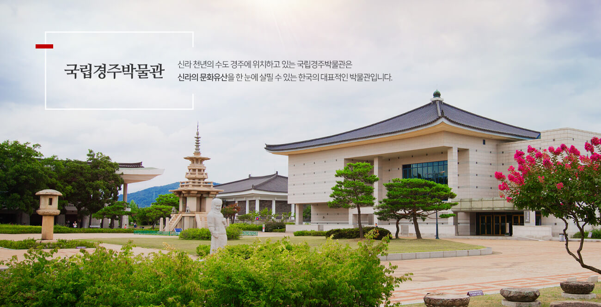

국립경주박물관
금관·토기·불교미술, 전시 유물로 살펴보는 신라의 변화

현장 음성 해설
해설을 글로 읽기
박물관에 들어가면 같은 시기의 유물 두 점을 골라 보세요. 재료, 모양, 발견 장소를 먼저 기록합니다. 금관의 화려함만으로 신라 사람들의 생활을 모두 알 수는 없습니다. 토기나 도구도 한 점 살펴보고, 두 유물이 당시 사회의 어떤 다른 모습을 보여 주는지 이야기해 봅시다.
신라는 한반도 동남부에서 출발해 오랜 시간 성장한 나라입니다. 박물관에서는 초기의 생활 자료부터 왕권과 지배층의 문화를 보여 주는 금속 공예품, 불교문화와 관련된 유물까지 서로 다른 시기의 자료를 볼 수 있습니다. 한 전시실의 물건만 보고 ‘신라 전체가 이랬다’고 생각하기보다 유물이 제작된 시기와 출토 장소를 함께 살펴야 합니다.
금관처럼 화려한 유물은 권력과 위신을 보여 주는 자료입니다. 그러나 금관만으로 당시 모든 사람의 생활을 설명할 수는 없습니다. 토기·도구·건축 부재처럼 일상과 관련된 자료에도 관심을 가져 봅시다. 박물관 전시실별 구성과 실제 전시품은 방문 시점에 따라 달라질 수 있습니다.
역사 학습목표
유물의 제작 시기·용도·출토 맥락을 확인하고 신라 사회의 특징을 근거로 설명한다.
사회 학습목표
전시를 선택하고 해설하는 박물관의 공공적 역할과 문화 향유의 기회를 생각한다.
윤리 학습목표
문화유산을 누구나 배울 수 있도록 보존·공개해야 하는 이유를 논의한다.
유물 한 점의 이름·시기·재료를 적고, 그 유물로 알 수 있는 것 1개와 알기 어려운 것 1개를 구분하세요.
“금관이 출토되었다는 사실만으로 당시 신라인이 모두 화려하게 살았다고 말할 수 있을까?”
지도교사 설명 예시 · 2분
“여기서는 신라의 역사를 한눈에 볼 수 있습니다. 다만 유물이 모든 사람의 삶을 똑같이 보여 주지는 않습니다. 금관은 화려하지만 이 유물을 사용한 사람은 일부였을 겁니다. 우리가 해야 할 일은 전시품을 감탄하며 보는 데서 끝나지 않고, 이 물건을 누가·언제·왜 만들었는지 묻는 것입니다.”
“유물 설명에 적힌 내용은 확인한 정보로 적고, 거기서 더 생각한 내용은 나의 해석으로 나누어 적으세요.”